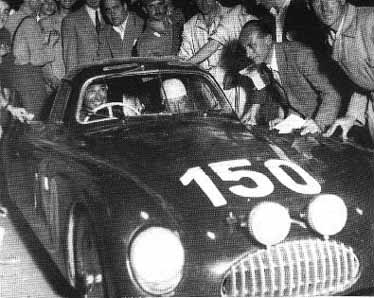
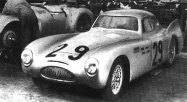
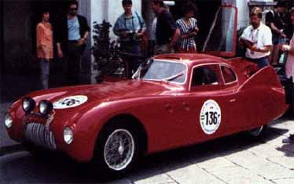
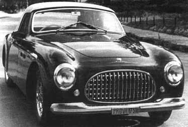
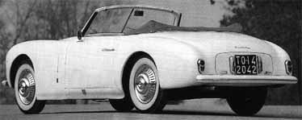
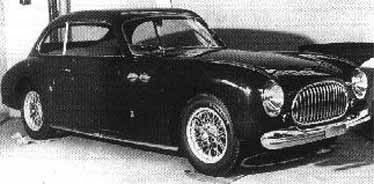
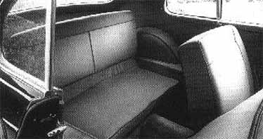

Carrozzeria Vignale · Cisitalia
Cisitalia’s by Vignale
1950 Cisitalia 202 CMM Coupé

In the summer of 1946, this car was designed by Dante Giacosa and Giovanni Savonuzzi. The first coupé was built by Alfredo Vignale, at the time the departmental head of Stabilimenti Farina. When it arrived at the Cisitalia factory for the first time, in late 1946, Dusio congratulated him. He hastily added a cheque for one hundred thousand lire. “Take this and don’t mention it to anyone,” Dusio added. With this bonus, Vignale was able to set up his own carrozzeria. Piero Taruffi was to drive this car at the first Mille Miglia after the Second World War, in 1947. But he was the first of the Cisitalia team to drop out, in Pesaro. It failed due to the pistons, which had been cast instead of forged, and proved not to be strong enough.

A second model made its debut in the 1948 Mille Miglia, again with Piero Taruffi. It met a similar fate.
1950 Cisitalia Coupé

1950 Cisitalia 202 B
[no picture yet…]
The Cisitalia dealers Lombardi & Koelliker commissioned three cars from Vignale. They were to be coupés without bumpers or wheel hubs, but all were equipped with a radio.
1948-1952 Cisitalia 202 SC


Next to the 202 Pinin Farina Coupé, Vignale and Stabilimenti Farina built a number of convertibles, virtually identical.
1952 Cisitalia 202C Coupé


In 1952, one 4-seater coupé was built.